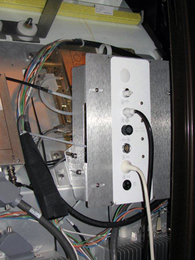

There are eight screws that allow for adjustment up/down, left/right, and in/out.
The PAC I/O panel should be adjusted so that it lines up with the slot in the enclosure in the left/right and up/down plane, and adjusted in/out so the gap between the I/O panel and the enclosure is less than 1 mm.
Illustration 3: PAC Alignment
